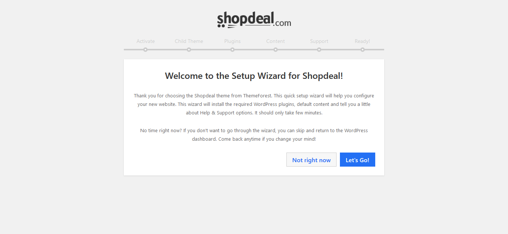
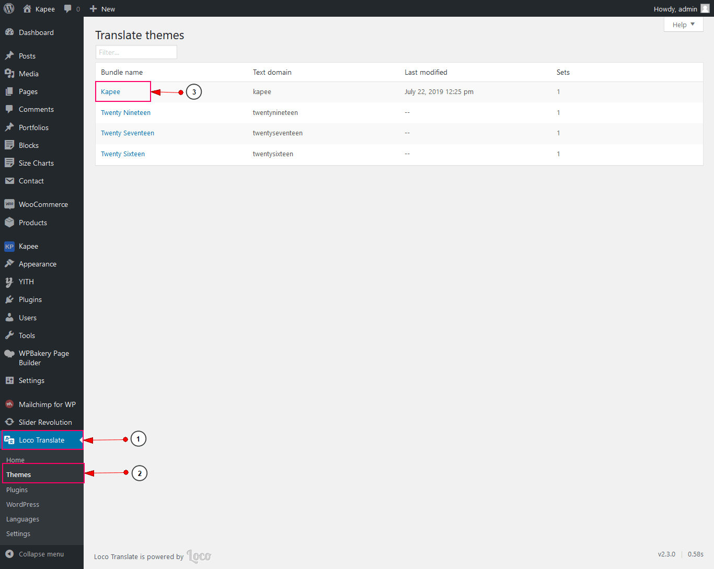
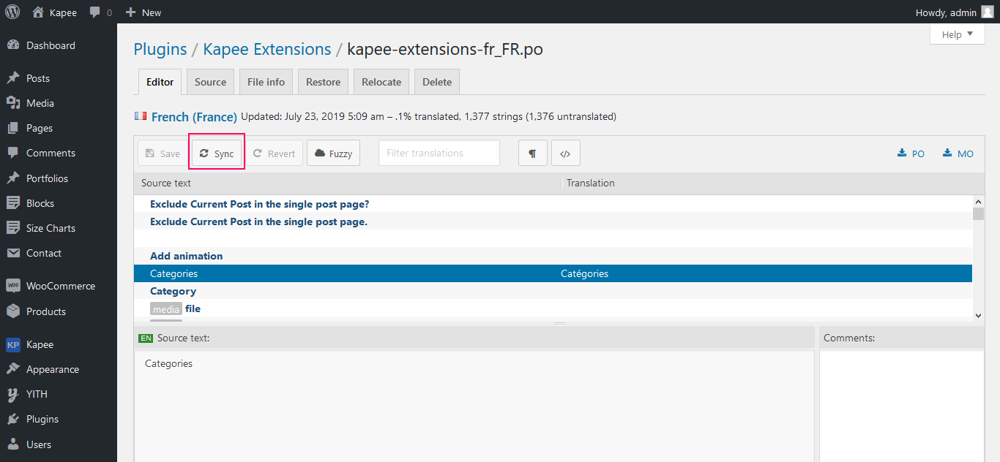

Kapee - Documentation
Introduction
Thank you for purchasing Kapee - Fashion Store WooCommerce Theme! In this document you will find information on how to install, manage and update your theme, as well as create content, install plugins, import Demo data etc. If you have any questions that are beyond the scope of this help file, please feel free to contact us via Support link. We will do our best to answer you in shortest of time.
Note: All images are just used for Preview Purpose Only. They are not part of the theme and NOT included in the final purchase files.
Need Support?
If you have any questions regarding to theme issues, please send us support request hereWordPress Information
To install this theme you must have a working version of WordPress already installed. If you need help installing WordPress, follow the instructions in WordPress Codex. Below are all the useful links for WordPress information.
- [WordPress Codex] - General info about WordPress and how to install on your server.
- [First Steps With WordPress] - General info about multiple topics about WordPress.
- [FAQ New To WordPress] - The most popular FAQ’s regarding WordPress.
Recommended PHP Configuration Limits
Many issues that you may run into such as; white screen, demo content fails when importing, empty page content, max execution time error, memory limit error, upload max filesize error and other similar issues are all related to low PHP configuration limits. The solution is to increase the PHP limits. You can do this on your own, or contact your web host and ask them to increase those limits to a minimum as follows:
Download Theme Package
To download, you need to log into your ThemeForest account and go to your download page. Locate the theme that you purchased in your Downloads list and click on the Download button
- All files & documentation : contains documentation, licenses, theme package, child theme package etc. So if you select this option, you need to extract the downloaded package and install the theme package inside.
- Installation WordPress file only : contains only the theme package
- License certificate & purchase code (PDF) : contains only the theme package
- License certificate & purchase code (text) : contains your license information in a text file
Theme Installation
After you download the package from ThemeForest, please unzip it. You'll see a file called kapee.zip, which is the main file needed to upload and install.
The theme files can be uploaded in two ways:
- Install via WordPress
- Install via FTP
1) Install via WordPress
- Login to your WordPress Dashboard.
- Navigate to Appearance > Themes
- Click Add New button on top of the page.
- Then click Upload Theme
- Browse to the kapee.zip file and click Install now for the theme to be uploaded and installed.
- After done installing, click Activate the theme
2) Install via FTP
- Using an FTP client (like FileZilla), connect to your server/hosting and navigate to your WordPress installation.
- Navigate to /wp-content/themes/ folder and upload the theme folder there (you need to unzip the theme kapee.zip package first).
- Locate your WordPress installation and upload the theme directory kapee (you unzipped in the previous step) into ../wp-content/themes/ in your WordPress installation.
- Log in to your WP Admin Dashboard and go to Appearance > Themes
- You will now see Kapee listed among the other themes. Just activate it!
- Click on the Begin activating plugins links Or Go to Appearance > Install Plugins.
- Select all plugins that you wish to install (Selecting all of them is recommended).
- Change Bulk Actions drop down to Install then click Apply in order to install the selected Plugins.
- After all plugin Installed then click on below Return to Required Plugins Installer link.
- Select again all plugins and Change Bulk Actions drop to Active then click Apply order to active the selected plugins..
Theme Setup Wizard
Theme setup is very easy. The setup wizard will open when you activate Kapee theme.The setup wizard will install child theme, then install plugins and then insert demo content setup like content, widgets,theme options and slider.
-
Click on "Let's Go" button to run setup wizard or click on "Not right now" to skip the wizard right now.

-
Enter your theme purchase code and click on activate button to activate theme license.
-
Click on "Create and use Child Theme" button to activate Child theme or you can skip this step to click on "Skip This Step" button.
Click on "Install" button and the wizard will start installing and activating plugins for you. After it's done, it will automatically go to the next step.
Choose any demo and click on "Import" button to import demo. The import process can take about 10 minutes. Please don't refresh the page.
-
The "Support" tab provides details about our support policy. Click "Agree And Continue" to proceed.
On the final step you will see a success message and two buttons: "Theme Dashboard" and "Visit Website".First button redirect you to theme dashboard and second button redirect to your site.
NOTE: You may always re-run the Setup Wizard by going to Kapee > Setup Wizard menu.
Import Demo Content
-
Login to your WordPress dashboard.
-
Go to Kapee > Demo Import.
-
Choose demo as you want to import.
-
Choose import content you want and click on import button. The import process can take about 10 minutes. Please don't refresh the page.
Note : All images are just used for Preview Purpose Only. They are not part of the theme and NOT included in the final purchase files. Also in vendor demo vendor list display only preview purpose. Vendor will not be import when you import demo content. You need to create vendor on your site then it will be display there.
Translation Theme
The easiest way to translate our theme and plugin in your language is by using the Loco Translate WordPress plugin. To use loco translate plugin, please see the steps below:
Notice: If you translate complete our theme in your language, You must be need to translate our theme(Kapee) and our theme's plugin(Kapee Extensions)
1) Translate Theme(Kapee)
- Install Loco Translate WordPress plugin.
- Go to Loco Translate > Themes and click kapee theme.

- Click New Language link.
- Choose your language and choose a location is in languages/themes/. We recommend you don’t choose a location is in themes/kapee/languages/, because after you update the theme all your custom files will be lost.
- Click Source Text and enter the text you want to translate in French translation.
- Click Save button.

- Note: To update your language file when you updated the theme, you only click Sync button.

2) Translate plugin(Kapee Extensions)
- Install Loco Translate WordPress plugin.
- Go to Loco Translate > plugin and click kapee-extensions.
- Click New Language link.
- Choose your language and choose a location is in languages/themes/. We recommend you don’t choose a location is in themes/kapee/languages/, because after you update the theme all your custom files will be lost.
- Click Source Text and enter the text you want to translate in French translation.
- Click Save button.
- Note: To update your language file when you updated the theme, you only click Sync button.

3) Use WPML with Kapee
Kapee theme is fully compatible with WPML plugin, the most famous plugin for building multilingual websites. Below you will find documentation for using WPML plugin with kapee. If you’ve purchased WPML and have any questions or issues, please check the links below.
- WPML Plugin - The highly recommended plugin to manage multi-lingual sites
- WPML Forum Support - If you bought WPML then you get free support from their amazing team
- Translating Widgets -Tutorial recommended by wpml team for translating widgets
Updating the theme
If you updating Kapee theme, Please following below step and update Kapee theme and this step is very easy and simple:
Notice:After updating the theme, Your content will not be lost. However, any customizations to the theme’s core files, such as PHP files, language files will be lost. So you need to the child theme to customize the theme and backup the language file if you translated the theme.
1) Theme Update Automatically
You can update the theme automatically by following this link-- https://envato.com/market-plugin/
2.Manual Update Via WordPress
- First Download Latest Installable theme from here.
- Login to your WordPress Dashboard.
- Go to Appearance > Themes. Deactivate Kapee Theme by activating a different theme.
- Delete exist Kapee Theme, don't worry your content will not be lost but Must be take a backup first your old theme before delete.
- Upload the latest version of Kapee.zip and activate it (more info in the Install Theme section).
- When modifying any theme files it is always best to use a Child theme, thus your file changes won’t be lost once you update your theme (check the Child Theme section for more).
3.Manual Update Via FTP
- First Download Latest Installable theme from here Then extract it to your computer..
- Access your server via FTP or SFTP
- Browse to wp-content/themes/
- Delete the current theme folder (folder "kapee") then upload the new one downloaded in step 1. (Don't forgot to upload unzip folder.)
Plugin Update
You can update plugin like 'WPBakery Visual Composer', 'Slider Revolution' and others by following these steps--:
Notice: If you translated plugins and the language files are in plugins/your-plugin-name/languages/ (For example, plugins/kapee-extensions/languages), you need to upload them to wp-content/languages/plugins/. If not, after updating plugins, your translated language files will be lost.
- Login to your wp-admin
- Go to Plugins > Installed Plugins
- Now, delete those plugins which you want to update. For example, if you want to update 'Slider Revolution' and 'WPBakery Visual Composer' plugins, then delete those plugins first.
- After deleting, you will get a notice to install those plugins again.
- Now install and activate those plugins. After installing, plugins will be updated automatically.
Child Theme
A WordPress child theme allows you to apply custom code changes to your site. Using a child theme ensures that all your customizations will not be overwritten even when you update the parent theme.
Kapee is fully child theme compatible. We have attached a basic child theme(kapee-child.zip) to the download package which contains the minimum of required files. If you are planing any code customizations we highly recommend to do this inside the child theme! Learn more about child themes here.
1) What is a Child Theme?
A child theme is a theme that inherits the functionality and styling of another theme, called the parent theme. Child themes are the recommended way of modifying an existing theme. Child themes allow you to modify or add to the functionality of the existing parent theme.
2) Why use a Child Theme?
Always use a Child Theme when modifying any theme files. This way you make sure a theme update will not wipe out any changes you have made to the files.
There are a few reasons why you would want to use a child theme: If you modify a theme directly and it is updated, then your modifications may be lost. By using a child theme you will ensure that your modifications are preserved.
Speed Optimization
What can make your site slower?
1. Plugins:
When you have a number of plugins active on your site, it can slow down your site. Deactivate all the plugins except the ones included within the theme and clear the browser cache. Then, you can activate your plugins one by one and check to see which plugin is slowing your site.
2. Images:
Images are a key factor in optimizing a website. It is important to optimize your images for your website. Images with large size can slow down your site. Do not upload images in large size. For instance, if your weblog is created by images with the size 800*600, you should upload an image with the same size and not bigger.
3. Host:
Your host or sever can be a reason of your site low speed. If you are using VPS for your hosting, it can be because of bad configurations and low resources. If you are using shared hosting, you need to contact your host provider in this regard so they can check it.
4. JS and CSS Files:
You should use a cache plugin. These plugins minify your files and combine them and stores a version of the file in cache in order to reduce your server requests and as a result, it will boost your site speed.
How To Improve Site Speed ?
1. Image Optimize:
You can compress images from CompressJPEG/TinyPNG website. Visit https://compressjpeg.com Or https://tinypng.com/ and compress all images before uploading them on your website. By this process, you can decrease your website loading time and provide your visitors, a better experience.
2 .htaccess Code For Better Website Speed:
If you familiar with .htaccess, you can go to the root foldef of your wordpress installation. Find .htaccess file and open it.Insert following code.
AddType application/x-font-woff .woff
AddType application/font-woff2 .woff2
AddType application/vnd.ms-fontobject .eot
<IfModule mod_deflate.c>
AddOutputFilterByType DEFLATE text/html
AddOutputFilterByType DEFLATE text/css
AddOutputFilterByType DEFLATE text/javascript
AddOutputFilterByType DEFLATE text/xml
AddOutputFilterByType DEFLATE text/plain
AddOutputFilterByType DEFLATE image/x-icon
AddOutputFilterByType DEFLATE image/svg+xml
AddOutputFilterByType DEFLATE application/rss+xml
AddOutputFilterByType DEFLATE application/javascript
AddOutputFilterByType DEFLATE application/x-javascript
AddOutputFilterByType DEFLATE application/xml
AddOutputFilterByType DEFLATE application/xhtml+xml
AddOutputFilterByType DEFLATE application/x-font
AddOutputFilterByType DEFLATE application/x-font-truetype
AddOutputFilterByType DEFLATE application/x-font-ttf
AddOutputFilterByType DEFLATE application/x-font-otf
AddOutputFilterByType DEFLATE application/x-font-opentype
AddOutputFilterByType DEFLATE application/x-font-woff
AddOutputFilterByType DEFLATE application/font-woff2
AddOutputFilterByType DEFLATE application/vnd.ms-fontobject
AddOutputFilterByType DEFLATE font/ttf
AddOutputFilterByType DEFLATE font/otf
AddOutputFilterByType DEFLATE font/opentype
# For Olders Browsers Which Can't Handle Compression
BrowserMatch ^Mozilla/4 gzip-only-text/html
BrowserMatch ^Mozilla/4\.0[678] no-gzip
BrowserMatch \bMSIE !no-gzip !gzip-only-text/html
</IfModule>
<ifModule mod_gzip.c>
mod_gzip_on Yes
mod_gzip_dechunk Yes
mod_gzip_item_include file \.(html?|txt|css|js|php|pl)$
mod_gzip_item_include mime ^application/x-javascript.*
mod_gzip_item_include mime ^text/.*
mod_gzip_item_exclude rspheader ^Content-Encoding:.*gzip.*
mod_gzip_item_exclude mime ^image/.*
mod_gzip_item_include handler ^cgi-script$
</ifModule>
## EXPIRES CACHING ##
<IfModule mod_expires.c>
ExpiresActive On
ExpiresByType application/vnd.ms-fontobject "access plus 1 year"
ExpiresByType application/x-font-ttf "access plus 1 year"
ExpiresByType application/x-font-opentype "access plus 1 year"
ExpiresByType application/x-font-woff "access plus 1 year"
ExpiresByType application/font-woff2 "access plus 1 year"
ExpiresByType image/jpg "access plus 1 year"
ExpiresByType image/jpeg "access plus 1 year"
ExpiresByType image/gif "access plus 1 year"
ExpiresByType image/png "access plus 1 year"
ExpiresByType text/css "access plus 3 month"
ExpiresByType application/pdf "access plus 3 month"
ExpiresByType text/x-javascript "access plus 3 month"
ExpiresByType application/x-shockwave-flash "access plus 3 month"
ExpiresByType image/x-icon "access plus 1 year"
ExpiresDefault "access plus 3 month"
</IfModule>
## EXPIRES CACHING ##
<ifModule mod_headers.c>
Header set Connection keep-alive
</ifModule>
<IfModule mod_header.c>
# 3 Month
<FilesMatch "\.(flv|gif|jpg|jpeg|png|ico|swf)$">
Header set Cache-Control "max-age=7257600"
</FilesMatch>
# 1 Week
<FilesMatch "\.(js|css|pdf|txt)$">
Header set Cache-Control "max-age=604800"
</FilesMatch>
# 10 Minutes
<FilesMatch "\.(html|htm)$">
Header set Cache-Control "max-age=600"
</FilesMatch>
# NONE
<FilesMatch "\.(pl|php|cgi|spl)$">
Header unset Cache-Control
Header unset Expires
Header unset Last-Modified
FileETag None
Header unset Pragma
</FilesMatch>
</IfModule>
# END WordPress
(Note: Please don't replace any code that already exists on the .htaccess file. It may have serious implications on your website.)
3. We recommend use follow plugins to boost your site performance..
- Fast Velocity Minify
- Autoptimize
- WP Super Cache
1. Fast Velocity Minify
- Please install and activate Fast Velocity Minify plugin.
- Please check your site after complete the configuration.
2. Autoptimize
- Please install and activate Autoptimize plugin.
- Please check your site after complete the configuration.
3. WP Super Cache
- Please install and activate WP Super Cache plugin.
- Enable cache options.
- You should exclude the my account, cart, checkout, compare, wishlist pages if you are using woocommerce plugin.
Home Page Setting
Please go through the following points to learn how to set home page:
- Login to your wp-admin
- Navigate to "Settings > Reading".
- Your homepage displays: Select a static page .
- Homepage : Select home page from dropdown list.
- Then Click on Save button
Create Page
Please go through the following points to learn how to create page:
- Login to your wp-admin and navigate to page.
- Go to add new page.
- Enter page title
- Click on back-end editor for create page with visual composer.
- Select page template.(Select maintenance for create maintenance page )
- Upload feature image.
- Select page meta options.
- Select page layout.(Full Page, Left Sidebar,Right Sidebar)
- Click on publish button for publish page.
Create Post
Please go through the following points to learn how to create post:
- Login to your wp-admin and navigate to posts.
- Go to add new post.
- Click on screen option upper right corner.
- You can see all post meta options there. Check expert for support expert in current post type.
- Enter post title.
- Click on back-end editor for create post with visual composer.
- Select post format.
- Select post categories.
- Insert post tag.
- Upload post feature image.
- Select post meta options.
- Enter post experts.
- Click on publish to publish post.
Create Portfolio
Please go through the following points to learn how to create portfolio:
- Login to your wp-admin and navigate to portfolios.
- Go to add new portfolio.
- Enter portfolio title.
- Click on back-end editor for create portfolio content with visual composer.
- Select categories.
- Insert skills.
- Upload feature image.
- Select portfolio page layouts.
- Enter client name.
- Enter website url.
- Upload portfolios gallery images.
- Select gallery type.
- Select gallery style.
- Click on publish to publish post.
Sidebars
WordPress Widgets add content and features to your sidebars. In the Kapee, you have following sidebars:
1. Theme's Sidebar
- Blog sidebar - it is displayed on the blog, category, tag, post pages.
- Shop Page Sidebar - it is displayed on the shop, product category, product tag pages.
- Shop Filter Sidebar - It is special sidebar. It is display on shop pages.It's visible when Shop Top Filter options is enable in theme options.
- Product Page Sidebar - It is display on single product page.
- Footer Area 1 - It display on first column in footer area.
- Footer Area 2 - It display on second column in footer area.
- Footer Area 3 - It display on third column in footer area.
- Footer Area 4 - It display on fourth column in footer area.
- Footer Area 5 - It display on fifth column in footer area.
2. Crate Cutom Sidebar
- Enter sidebar name.
- Click on "Add Widget Area" button to add sidebar.
Note :- You can assign this sidebar on posts/pages from pages options or theme options.
3. Remove Custom Sidebar
- Click on trace icon to remove custom sidebar.
Add Widgets To Sidebar
- Login to the WordPress Dashboard.
- Navigate Appearance > Widgets.
Widgets List
Kapee comes with 20+ custom widgets. See below list of widgets.
About Us
This widget display information about your site.
About the post’s author
This widget display post author information and it will work on single post page.
Posts List
This widget allows you to display post.
Recent Posts
This widget allows you to display recent posts.
Recent Comments
This widget allows you to display recent comments.
Tab Posts
This widget allows you to display posts with tab.
Portfolios
This widget allows you to display portfolios.
Products
This widget allows you to display products.
Products Tab
This widget allows you to display products with tab.
Attributes Filter
This widget allows you to display product attributes.
Price Filter List
This widget allows you to display price filters.
Products Brand
This widget allows you to display products brand.
Product Sorting
This widget allows you to display product sorting options.

Recent View Products
This widget allows you to display recently viewed products.
Contact Us
This widget provides options for you to enter some informations such as logo, phone number, email, website link etc.
Newsletter
This widget allows you to display newsletter form.
Facebook Page
This widget allows you to display facebook page.

Flickr
This widget allows you to display flickr images.
This widget allows you to display instagram images.

This widget allows you to display tweet.
Theme Options
Theme Options located in WP Dashboard → Kapee → Theme Options includes all global options that affect your entire website. These options can be overwritten by page options of any custom page.
General
This section contain the following options:
- Theme Layout : Select your site layout wide or box.
- Container Width : Enter site container width.
- Logo : Upload your site logo.
- Logo Light Version : Upload an alternative light logo that will be used on dark and transparent header.
- Logo Width : Set your logo width.
- Sticky Header Logo : Upload sticky header logo.It will be display on your sticky header.
- Sticky Header Logo Width : set sticky logo width.
- Mobile Header Logo : Upload mobile header logo.
- Mobile Header Logo Width : set mobile logo width.
- Favicon : Upload favicon icon.
- Apple Touch Icon : Upload apple touch icon.The Apple Touch Icon is a file used for a web page icon on the Apple iPhone, iPod Touch, and iPad. When someone bookmarks your web page or adds your web page to their home screen this icon is used.Optimal dimension: 152px x 152px.
Site Preloader
This section contain the following options:
- Site Preloader : Enable/disable preloader on your website.
- Preloader Background : Set preloader background color.
- Preloader Image : Set preloader type as per your need.
- Choose Preloader Style : Choose preloader style.At this moment we have 5 styles.
- Upload Preloader Image : Upload preloader image.It will be show when you select preloader image as custom option.
Back To Top Button
This section contain the following options:
- Button : Enable/disable back to top button.
- Button In Mobile : Enable/disable back to top button in mobile device.
Lazy Load Images
This section contain the following options:
- Lazy Load Images : Enables lazy load to reduce page requests.
Typography
You can select font family, font size, font weight, line height etc..
Custom Fonts
This section you can enable custom font and upload font library.
Adobe Typekit Font
This section you can enable adobe typekit font.After enable typekit font you need to enter typekit id and list of font family name(every font family separated by comma) you want to include in site.
Style And Colors
This section you can manage all color options like font color,background color,link color,hover color etc.
Header
This section you can manage following options.
- Phone Number : Enter phone number.
- Email Address : Enter email address.
- Store Location : Enter store location.
- Welcome Message : Enter welcome message.
- Newsletter : Enter newsletter button text.
- Language Switcher Style : Select language switcher style. This option will work if you use Polylang plugin.
- Language Country : Select language country option. This option will work if you use Polylang plugin.
- Login/Register Popup : Enable/disable header login/register popup.
- My Account Style : Select myaccount style.
- Mini Cart Popup : Enable/disable header minicart popup.
- Cart Style : Select cart style.
- Cart Icon : Select cart icon.
- Shop By Categories Title : Enter shop by categories menu title.
- Open Categories(Vertical) Menu In Front Page : Categories(Vertical) menu open in front page.On other page open with hover.
Header Manager
This section you can manage following options.
- Topbar : Enable/Disable topbar.
- Header Transparent : Enable/Disable header transparent.
- Select Header : Select header style predefine or header builder.
Header Builder
This section you can build header with some pre-defined elements.
Header Topbar Manager
- Topbar Elements Left : Put element that you want to display in topbar left.
- Topbar Elements Right : Put element that you want to display in topbar right.
- Topbar Width Left : Select width of left topbar.
- Topbar Width Right : Select width of right topbar.
Header Main Manager
- Header Main Elements Left : Put element that you want to display in main header left.
- Header Main Elements Center : Put element that you want to display in main header center.
- Header Main Elements Right : Put element that you want to display in main header right.
- Header Main Width Left : Select width of main header left area.
- Header Main Width center : Select width of main header center area.
- Header Alignment Center : Select yes for header center conent display center.
- Header Main Width Right : Select width of main header right area.
Header Navigation Manager
- Header Navigation Elements Left : Put element that you want to display in header navigation left.
- Header Navigation Elements Center : Put element that you want to display in header navigation center.
- Header Navigation Elements Right : Put element that you want to display in header navigation right.
- Header Navigation Width Left : Select width of header navigation left area.
- Header Navigation Width center : Select width of header navigation center area.
- Header Alignment Center : Select yes for above conent display center.
- Header Navigation Width Right : Select width of header navigation right area.
Header Sticky Manager
This section you can manage following options.
- Sticky Header : Enable sticky header desktop or disable..
- Header Sticky Manager : This option is visible if you have select header style as header builder. Here you can build sticky header with pre-defined elements.
Header Mobile Manager
This section you can manage mobile header.
- Ajax Search : Enable or disable ajax search in mobile header.
- On Tablet : Enable sticky header on tablet width < 992px or disable..
- On Mobile : Enable sticky header mobile width < 480px or disable.
Header Builder For Mobile
These options are visible if you have select header style as header builder. Here you can build mobile header with pre-defined elements.
- Header Mobile Elements Left : Put element that you want to display in header left.
- Header Mobile Elements Center : Put element that you want to display in header center.
- Header Mobile Elements Right : Put element that you want to display in header right.
- Header Mobile Width Left : Select width of header left area.
- Header Mobile Width center : Select width of header center area.
- Header Alignment Center : Select yes for above conent display center.
- Header Mobile Width Right : Select width of header right area.
Header Builder For Mobile Sticky
- Header Mobile Sticky Elements Left : Put element that you want to display in header left.
- Header Mobile Sticky Elements Center : Put element that you want to display in header center.
- Header Mobile Sticky Elements Right : Put element that you want to display in header right.
- Header Mobile Sticky Width Left : Select width of header left area.
- Header Mobile Sticky Width center : Select width of header center area.
- Header Alignment Center : Select yes for above conent display center.
- Header Mobile Sticky Width Right : Select width of header right area.
Ajax Search
This section you can manage following options.
- Ajax Search Style : Select search box style. At this moment we have 4 box style.
- Ajax Search Shape : Select search box shape Square/Radius.
- Search Content Type : Select content type you want to use in the search box..
- Categories Dropdown : Show categories dropdow in search form.
- Search Categories Dropdown : Select display categories in search categories dropdow.
- Show Categories Hierarchical : Show categories in hierarchical (Must be need to select above option Show All Categories).
- Search Palceholder Text : Enter search palceholder text.
- Trending Search : Enable trending search.It will show when focus on search box.
- Trending Categories : Select your trending search categories.
Page Title
This section you can manage following options.
- Page Title Layout : Select page title layout.Disable for hide title area.
- Page Title : Select if you want to show or hide page title.
- Breadcrumbs : Select if you want to show or hide the breadcrumbs.
- Breadcrumbs Delimiter : Select breadcrumb separator
Woocommerce Global Options
This section you can manage following options.
- Order Tracking Page : Set your order tracking page.If order tracking page not created then create new page and put [woocommerce_order_tracking] shortcode in page content.
- Search By Product SKU : Ajax search product by sku.
- Manage Password Strength : Reduce the strength requirement on the woocommerce user login/signup password .
- Product Labels : Show/Hide the labels sale, featured, new and out of stock on product.
- Sale Product Label : Show/Hide the sale label.
- New Product Label : Show/Hide the new label.
- Featured Product Label : Show/Hide the featured label.
- Out Of Stock Product Label : Show/Hide the stock message.
Shop Page
This section you can manage following options.
- Page Layout : Select shop page layout.
- Sidebar Width : Select sidebar width. It will be hide if page layout is "Full Width"
- Sidebar Widget Area : Select sidebar which display on shop page.It will be hide if page layout is "Full Width"
- Page Title : Show/Hide the shop page title.
- Products View Mode Icon : Show/Hide product view icon(List/Grid icon).
- Products Default View : Select default product display style Grid/List.
- Products Per Page : Specify the number of products you want to show per page.
- Products Per Page Dropdown : Show/Hide product per page dropdown list.
- Products Per Page Variations : Product per page dropdown values.
- Ajax Filter : Enable/Disable ajax filter on shop and product archive page.
- Shop Top Filter : Enable/Disable shop to filter sidebar on shop and product archive page.
- Products Columns : Specify how many products you want to show per row?
- Products Columns On Mobile : Specify how many products you want to show per row on mobile?
- Products Pagination : Specify your pagination style.
Product Styles
Catalog Mode
Categories Page
Login To See Price
Product Page
Images/Gallery
Summary
Bought Together
Tabs
Related/Up-Sells/Rviewed
Checkout Page
- Products Hover Style : Select product .
Login/Register
This section you can manage following options.
- Login Information : Display login information in login form.
Pages
This section you can manage following options.
- Page Layout : Select page layout with sidebar position.
- Sidebar Width : Select sidebar width. It will be hide if page layout is "Full Width"
- Sidebar Widget Area : Select sidebar which display on shop page.It will be hide if page layout is "Full Width"
- Page Comments : Show/Hide the page comment.
Widget
This section you can manage following options.
- Title Style : Select widget title style.
- Widget Toggle : Enable page widget toggle or not.
- Widget Menu Toggle: Enable page widget menu toggle or not.
- Enable Widget Items Hide : Enable widget items hide max limit.
- Show Number Of Widget Items : Enter number of menu item disaplay in widget.More item will be hide and you show "Show more+" label.
- Sidebar Canvas In Mobile: Display sidebar canvas in mobile.
Page 404
This section you can manage following options.
- Heading text : Page 404 heading title.
- Content body Text : 404 page content text.
- Button text: "Back To Home" button text.
Blog / Post
This section you can manage following options.
- Post Fancy Date : Show/Hide post fancy date.
- Fancy Date Style : Select fancy date style.
- Sticky Post Icon : Show/Hide sticky icon.
- Post Format Icon : Show/Hide post format icon.
- Post meta : Show/Hide post post meta like author, date, category, tag etc.
- Specific Post meta : Choose specific post meta that you want to display.
- Post Meta Icon : Show/Hide post meta icon.
- Post Meta Separator : Choose post meta seperator.
Blog / Archives
This section you can manage following options.

- Page Layout : Select page layout with sidebar position.
- Sidebar Width : Select sidebar width. It will be hide if page layout is "Full Width"
- Sidebar Widget Area : Select sidebar which display on shop page.It will be hide if page layout is "Full Width"
- Page Title : Show/Hide the page title.
- Page Title Text : Blog page title text.
- Page Breadcrumb : Show/Hide breadcrumb on blog page.
- Post Style : Select blog style.
- Gird Layout : Select grid layout Simple/Masonry.This option will be show if post style is grid style.
- Grid Post Style : Select grid post style.This option will be show if post style is grid style.
- Gird Columns : Select number of grid columns. This option will be show if post style is grid style.
- Post Thumbnail : Show/Hide post thumbnail.
- Post Title : Show/Hide post title.
- Post Content : Select display post content Expert content or Full content.
- Excerpt Length (words) : Show blog listing excerpt content length (words).It will be show if you select post content as expert content.
- Read More Button : Show/Hide read more button.
- Read More Button Style : Select read more button style.
- Read More Text : Enter read more button text.
- Pagination Style : Select pagination style.
Single Post
This section you can manage following options.
- Sidebar : Select single post sidebar layout.
- Sidebar Width : Select sidebar width. It will be hide if sidebar layout is "Full Width"
- Sidebar Widget Area : Select sidebar which display on shop page.It will be hide if sidebar layout is "Full Width"
- Post Thumbnail : Show/Hide post thumbnail.
- Post Gallery Style : Select gallery style.
- Post Title : Show/Hide post title.
- Page Title Text : Enter title text.
- Author Info : Show/Hide author info box.
- Post Tags : Show/Hide post tag.
- Social Share Links : Show/Hide share links.
- Post Navigation : Show/Hide post navigation.
- Post Comments : Show/Hide post comments.
- Related Posts : Show/Hide related post.
- Show Related Posts : Enter number to display number of related post.
- Taxonomy : Select related post taxonomy.
- Post Orderby : Select order by to display related post.
- Post Order : Select order to display related post.
- Display Posts In : Select style of related post to display Grid or Slider.
Portfolio Archives
This section you can manage following options.
- Page Layout : Select page layout.
- Sidebar Width : Select sidebar width. It will be hide if page layout is "Full Width"
- Sidebar Widget Area : Select sidebar which display on shop page.It will be hide if page layout is "Full Width"
- Page Title : Show/Hide page title.
- Page Title Text : Enter title text.
- Page Breadcrumb : Show/Hide page breadcrumb.
- Hover Style : Select portfolio hover style.
- Grid Layout : Select grid layout style.
- Grid Columns : Select number of columns to display per row.
- Grid Gapping : Specify spacing between portfolio.
- Portfolio Filter : Show/Hide portfolio filter.
- Portfolio Per Page : Enter number to display number of portfolio per page.
- Hover Button Icon : Show/Hide hover icon.
- Link Button Icon : Show/Hide link icon.
- Zoom Image Icon : Show/Hide zoom icon.
- Portfolio Content Part : Show/Hide portfolio bottom content part( title and category).
- Portfolio Category : Show/Hide portfolio category.
- Portfolio Title : Show/Hide portfolio title.
- Pagination Style : Select pagination style.
Single Portfolio
This section you can manage following options.
- Page Layout : Select single post sidebar layout..
- Sidebar Width : Select sidebar width. It will be hide if page layout is "Full Width"
- Sidebar Widget Area : Select sidebar which display on shop page.It will be hide if page layout is "Full Width"
- Portfolio Layout : Select portfolio layout.
- Thumbnail/Gallery : Portfolio gallery style thumbnail or gallery.
- Gallery Style : Select gallery style.
- Information Title : Show/Hide information title.
- Project Description : Show/Hide description.
- Preview Button : Show/Hide preview button.
- Project Client : Show/Hide client name.
- Project Date : Show/Hide date.
- Project Category : Show/Hide portfolio category.
- Project Skill : Show/Hide portfolio skill.
- Social Share Links : Show/Hide share links.
- Project Navigation : Show/Hide navigation.
- Comment : Show/Hide comment.
- Related Projects : Show/Hide related projects.
- Show Related Portfolios : Enter number to display number of related portfolio.
- Taxonomy : Get related Portfolios by post taxonomy category or tag.
- Portfolios Orderby : Select order by to display related portfolio.
- Portfolios Order : Select order to display related portfolio.
- Display Portfolios In : Select style of related portfolio to display Grid or Slider.
Social Profile
This section you can manage following options.
- Social Profile Icon : Show/Hide social profile icon.
- Icons Style : Select icon style.
- Icons Size : Select icon size.
- Facebook : Enter your facebook profile link.
- Twitter : Enter twitter profile link.
Social Share
This section you can manage following options.

- Social Share Icon : Show/Hide social share icon.It will be display on blog, posts, products, portfolios, etc...
- Icons Style : Select icon style.
- Icons Shape : Select icon shape.
- Icons Size : Select icon size.
- Share Icons Manager : Customize share icon.Drag drop icon you want to display.
Slider Config
Newsletter
This section you can manage following options.
- Newsletter : Enable/Disable Newsletter popup on your site
- When Popup Appear? : Select options when load popup.
- Popup Delay : Enter no of second to open popup after page load.
- Open when user scroll % of page : Enter number when show popup.100% - For end of page.IT will be show if you select popup appear type "When Page Scroll".
- Newsletter Title : Enter popup title.
- Main content : Enter popup content.
- Newsletter Don't Show Msg : Enter don't show message text.
- Mobile : Show/Hide in mobile.
- Background Color : set popup background color or image.
- Title Color : Select title color schema.
- Button Background Color : Select button background color and hover color.
- Button Text Color : Select button color and hover color.
Cookie Notice

Maintenance Mode
- Maintenance Mode : Status of maintenance mode On/Off
- Page : Select page to display as maintenance page. If you don't want to display header and footer in maintenance then select page template as "Maintenance".
Custom Css/Js
- CSS Code : Custom css code here.
- JS Code before head: Paste your custom JS code here.That will be load before head.
- JS Code before body: Paste your custom JS code here. That will be load before body.
Product Attributes/Swatches
To display product attributes (colors, size) you have to create product attributes first.
Follow below step to create attribute and swatches.
- Go to Product > Attribute to add a new attribute or edit an exists attribute.
- Click on Configure terms to add new colors like red,blue etc.
- Add new terms.
- Then, set variations for Product variable:(Product > Add new)
Product Options
In this area you can manage single page options like page layout,video link,size chart etc.
- Product Page Layout : Select product page layout.
- Product Video url : Enter your video url link.
- Product Size Guide : Select size guide chart.You can create size guide chart from Size Chart > Add New.
- Enable Custom Tab : Check this for add custom tab.
- Custom Tab Title : Enter custom tab title.
- Custom Tab Content : Enter custom tab content.
Offer Text
You can add list of offer on product page.It will be display on product content.
- Is Offer Available : Check this for add offer.
- Offer title : Enter your offer text.
- Link Text : Enter link text.It's display end of the offer text.If you leave it's blank then display "?" icon there. Click on this link you can view offer detail.
- Offer Detail : Select offer detail.Here display all blocks.You can add new offer from Blocks > Add New.
- Add Offer : Click on this button to add new offer.
Service Text
You can add list of services on product page. It will be display on product content.
- Is Service Available : Check this for add service.
- Service title : Enter your service text.
- Link Text : Enter link text.It's display end of the offer text.If you leave it's blank then display "?" icon there. Click on this link you can view service detail
- Service Detail : Select service detail.Here display all blocks.You can add new services from Blocks > Add New.
- Add Service : Click on this button to add new service.
Product Image Size Settings
Please go to Appearance => Customize => WooCommerce => Product Images. .
Frequently Bought Together
Choose products which you recommend to be bought along with your particular product.

Elements
WPBakery Page Builder will help you manage your content at the WordPress sites and build any layout you can imagine in a few minutes without coding. You can read WPBakery Page Builder Documentation to get more details.
In Kapee, we also create some new elements that will help you build your website a lot easier.
Products Grid Or Carousel
By using "Products Grid Or Carousel" element, you can add products grid or carousel in content. After settings all attribute, It will be look like this
Attributes for General Tab:
- Title : Enter widget title.
- Layout : Select layout style(Slider/Grid)
- Products Hover Style : Select product hover style.
- Data source : Select data source which data you want to display in this element.
- Category : Type and select your category(s).
- Exclude Products: Type and select your product(s) you want to exclude.
- Number Of Products : Number of products to display.
- Order By : Filter products by Date | Title | Name(slug) | Id etc.
- Sort By : Products sort by Ascending/Descending.
- Products Pagination : Choose pagination style.It will show if layout style is grid.
- Show View All Button : Select this for display view all button.Button will be show it title is not empty.
- Extra class name : You can put an extra CSS class name, if required.
Attributes for Carousel Setting(It's visible if layout type is slider):
- Number Of Row : Display carousel in number of row.
- Autoplay : Checked, if you want to autoplay your carousel or not.Check this for autoplay carousel.
- Loop : Select this check box to enable infinity loop and display carousel in the circular loop.
- Center Mode : Center item. Works well with an odd number of items.
- Nav : Select this for enable navigation icon(Next/Prev).
- Dots: Select this for enable dots navigation.
- Extra large devices : Select number of slide to display in extra large devise(1200px and up).
- Large devices : Select number of slide to display in large devise(992px and up).
- Medium devices : Select number of slide to display in medium(tablets) devise(768px and up).
- Small devices : Select number of slide to display in small devise(landscape phones, 576px and up).
- Extra small devices : Select number of slide to display in extra small devise(portrait phones, less than 576p).
Attributes for Grid Setting(It's visible if layout type is grid):
- Number Of Columns : Select number of column to display in grid.
Products With Banner
By using "Products With Banner" element, you can add products with banner in content. After settings all attribute, It will be look like this
- Number Of Columns : Select number of column to display in grid.
Products Tabs
By using "Products Tabs" element, you can add products with tabs in content. After settings all attribute, It will be look like this

Products And Categories Box
By using "Products And Categories Box" element, you can add products and categories box in content. After settings all attribute, It will be look like this
Hot Deal Products
By using "Hot Deal Products" element, you can add hot deal products in content. After settings all attribute, It will be look like this
Please see below image to learn how to set hot deals products?
Product Categories
By using "Product Categories" element, you can add product categories in content. After settings all attribute, It will be look like this
Product Categories Thumbnail
By using "Product Categories Thumbnail" element, you can add product categories thumbnail in content. After settings all attribute, It will be look like this
Products Recently View
By using "Products Recently View" element, you can add recently viewed products in content. After settings all attribute, It will be look like this

Products Brands
By using "Products Brands" element, you can add product brands in content. After settings all attribute, It will be look like this
Products Widgets
By using "Products Widgets" element, you can add products in content. After settings all attribute, It will be look like this
Dokan Vendors
By using "Dokan Vendors" element, you can add dokan vendor list in content. After settings all attribute, It will be look like this.For use this element you need to activate Dokan plugin.
WCFM Vendors
By using "WCFM Vendors" element, you can add WCFM vendor list in content. After settings all attribute, It will be look like this.For use this element you need to activate WCFM Marketplace plugin.
WCMP Vendors
By using "WCMP Vendors" element, you can add WCMP vendor list in content. After settings all attribute, It will be look like this.For use this element you need to activate WC Marketplace plugin.
WC Vendor
By using "WC Vendors" element, you can add WC vendor list in content. After settings all attribute, It will be look like this.For use this element you need to activate WC Vendors Marketplace Pro plugin.

Blog
By using "Blog" element, you can add blog post in content. After settings all attribute, It will be look like this
Blog Carousel
By using "Blog Carousel" element, you can add blog carousel in content. After settings all attribute, It will be look like this
Portfolio
By using "Portfolio" element, you can add portfolio in content. After settings all attribute, It will be look like this
Portfolio Carousel
By using "Portfolio Carousel" element, you can add portfolio carousel in content. After settings all attribute, It will be look like this
Button
By using "Button" element, you can add button in content. After settings all attribute, It will be look like this
List
By using "List" element, you can add list in content. After settings all attribute, It will be look like this
Heading
By using "Heading" element, you can add heading in content. After settings all attribute, It will be look like this
Banner
By using "Banner" element, you can add banner in content. After settings all attribute, It will be look like this

Banner Carousel
By using "Banner Carousel" element, you can add banner carousel in content. After settings all attribute, It will be look like this
Image Gallery
By using "Image Gallery" element, you can add image gallery in content. After settings all attribute, It will be look like this
Testimonials
By using "Testimonials" element, you can add client testimonials in content. After settings all attribute, It will be look like this
Team
By using "Team" element, you can add team in content. After settings all attribute, It will be look like this
Info Box
By using "Info Box" element, you can add infobox in content. After settings all attribute, It will be look like this
Counter
By using "Counter" element, you can add counter in content. After settings all attribute, It will be look like this

Countdown Timer
By using "Countdown Timer" element, you can add countdown timer in content. After settings all attribute, It will be look like this
Social Button
By using "Social Button" element, you can add social buttons in content. After settings all attribute, It will be look like this
By using "Instagram" element, you can add instagram images in content. After settings all attribute, It will be look like this
By using "Twitter" element, you can add twitter feed in content. After settings all attribute, It will be look like this
Video Player
By using "Video Player" element, you can add video in content. After settings all attribute, It will be look like this

Newsletter
By using "Newsletter" element, you can add newsletter in content. After settings all attribute, It will be look like this
Contact Us
By using "Contact Us" element, you can add contact us form in content. After settings all attribute, It will be look like this
Progress Bar
By using "Progress Bar" element, you can add progress bar in content. After settings all attribute, It will be look like this
Tabs
By using "Tabs" element, you can add tabs in content. After settings all attribute, It will be look like this
Tour
By using "Tour" element, you can add tour in content. After settings all attribute, It will be look like this
Accordion
By using "Accordion" element, you can add accordion in content. After settings all attribute, It will be look like this
WPBakery Page Builder
WPBakery Page Builder will help you manage your content at the WordPress sites and build any layout you can imagine in a few minutes without coding. You can read WPBakery Page Builder Documentation to get more details.
Note : You don't directly purchase the WPBakery Page Builder plugin. So you can not update it by yourself. It is also not recommended. When it has a new version, we will be careful to test and release the new theme version.
Revolution Slider
Kapee includes the popular Revolution Slider Created By ThemePunch.This slider is 100% responsive and has many amazing options. In the following sections, you will know how to add a new slider and how to show it on frontend. This is its own documentation. You can read to get more information.
Note : You don't directly purchase the Revolution Slider plugin. So you can not update it by yourself. It is also not recommended. When it has a new version, we will be careful to test and release the new theme version.
Contact Form 7
Contact Form 7 is a Contact Form creation plugin that is very flexible and easy to use. It manages multiple contact forms, plus you can customize the form and the mail contents flexibly with simple markup. The form supports Ajax-powered submitting, CAPTCHA, Akismet spam filtering and so on. Read more on how to Create your own Contact Forms a few sections up in Creating Contact Forms or find out more on the plugin Contact Form 7 Plugin Documentation.
YITH WooCommerce Wishlist
These Plugins allow users adding products to wishlist them.
YITH WooCommerce Wishlist Plugin
More info on how to use these plugins can be found at YITH WOOCOMMERCE WISHLIST Documentation pageYITH WooCommerce Compare
These Plugins allow users adding products to comparing them.
YITH WooCommerce Compare Plugin
More info on how to use these plugins can be found at YITH WooCommerce Compare Documentation pageMailChimp for WordPress
MailChimp for WordPress comes with a free plugin, which is awesome by itself. It is actively used on nearly half a million sites and has been very well received by the WordPress community.
MailChimp for WordPress Plugin
More info on how to use these plugins can be found at MailChimp for WordPress Documentation page1. How to find purchase code?
Note : Without purchase code you can't import our demo content.
- Log into your Envato Market account.
- Hover the mouse over your username at the top of the screen.
- Click ‘Downloads’ from the drop-down menu.
- Click ‘License certificate & purchase code’ (available as PDF or text file).
For more detail Click Here
2. Theme is missing the style.css stylesheet error
That's a common issue caused by not uploading the correct zip file. Go back to http://themeforest.net/downloads and when clicking the Download button, choose the "Installable WordPress file only". And upload this zip file.
3. Are you sure you want to do this?
After browsing for your theme and clicking the "Install Now" button, it’s possible your WordPress installation will ask "Are you sure you want to do this?" This could be due to the fact that you are trying to install the wrong zip file (remember – you want the "Installable WordPress file only") or it’s possible the upload limit on your server isn’t large enough.You'll need to contact your hosting company to have them increase upload_max_filesize value up to 32MB, or you may install the Theme via FTP.
4. 500 Internal Server Error
Please extend below php configuration of our theme requirement in php.ini or Contact your host provider support team and extend below detail.
5. White Screen Of Death or PHP Error Notice
A "white screen of death" happens when there is a PHP error on the site but WP_Debug isn’t enabled on the server. So the first thing to do would be to enable WP_Debug so you can read what the actual error is and thus fix the problem.
6. How to show Registration Form on My Account page?
Please go Woocommerce > Settings on admin sidebar.
Please go Accounts section.
Please check Enable registration on the "My Account" page in Registration Options.
7. How to setup Language Switcher and Currency Switcher?
You can show wpml language switcher or wpml currency switcher.
You should enable Show WPML Language Switcher and Show WPML Currency Switcher options in Kapee > Theme Options > Header.
Before enable these options, you should install WPML and WooCommerce Multilingual - run WooCommerce with WPML plugins.
You should configure wpml language switcher in WPML > Languages > Language switcher options. You can see here for more details.
You should configure wpml currency switcher in WPML > WooCommerce Multilingual > Manage Currencies. You can see here for more details.
8. How to update WPBackery Visual Composer, Revolution Slider And Kapee Extensions Plugins?
Important: Before update this plugin, you should delete this plugin in Plugins on admin sidebar.
- Please go Plugins on admin sidebar.
- Please select these plugins.
- Please deactivate these plugins.
- Please select these plugins.
- Please delete these plugins.
- Please go Appearance > Install Plugins on admin sidebar.
- Please select these plugins.
- Please install these plugins.
- Please activate these plugins.
9. Outdated WooCommerce Templates
In case you're seeing a notification in your administration dashboard saying the theme includes some outdated WooCommerce templates, it means you've recently updated WooCommerce but haven't updated the theme yet.
Updating the theme to its latest version will fix the outdated templates.
10. Demo Content Duplicated
When you import our demo content, it can take several minutes depending on the speed of your server. Each time the button is clicked it will import the content, so if it is clicked twice it will import everything two times. There are two ways to get rid of duplicate content.
Method 1: WP Reset Plugin – This plugin is the fastest way to get rid of content. However, it will remove all content from your database and leave the default theme activated. It does not remove plugins, but will deactivate them and remove all pages, posts, menus, sliders, widget data, etc. Basically it removes all the content that you imported from our theme. Only do this if you are able to start over. Click Here To Download.
Method 2: Manual Removal – This method will take longer and simply involves manually removing duplicate items. For example, go to the Appearance > Menu and delete and duplicate items one by one. Same thing for pages, post, sliders, etc.
11.How to create tracking order page?
Create new page and put [woocommerce_order_tracking] shortcode in page. After then you can configure that page in Kapee => Theme Options => Woocommerce.
Thank you for purchasing our theme
If you have any questions that are beyond the scope of this documentation.Please feel free here.
Thanks so much!
Social Links
This widget allows you to display social links.Here display those links which you added in kapee > Theme Options > Social > Social Profile.